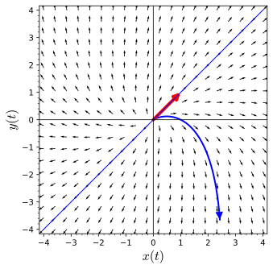

To understand and be able to solve systems \({\mathbf x}' = A {\mathbf x}\text{,}\) where \(A\) is a \(2 \times 2\) matrix with a single eigenvalue \(\lambda\text{.}\)
The characteristic polynomial of the system (3.5.1) is \(\lambda^2 - 6\lambda + 9\) and \(\lambda^2 - 6 \lambda + 9 = (\lambda - 3)^2\text{.}\) This polynomial has a single root \(\lambda = 3\) with eigenvector \(\mathbf v = (1, 1)\text{.}\) There is a single straight-line solution for this system (Figure 3.5.1). The strategy that we used to find the general solution to a system with distinct real eigenvalues will clearly have to be modified if we are to find a general solution to a system with a single eigenvalue.

Figure3.5.1.A system with one straight-line solution
Subsection3.5.1Repeated Eigenvalues
The remaining case that we must consider is when the characteristic equation of a matrix \(A\) has repeated roots. The simplest such case is
\begin{equation*}
\begin{pmatrix}
dx/dt \\ dy/dt
\end{pmatrix}
=
\begin{pmatrix}
\lambda & 0 \\
0 & \lambda
\end{pmatrix}
\begin{pmatrix}
x \\ y
\end{pmatrix}
=
A
\begin{pmatrix}
x \\ y
\end{pmatrix}.
\end{equation*}
The eigenvalues of \(A\) are both \(\lambda\text{.}\) Since \(A{\mathbf v} = \lambda {\mathbf v}\text{,}\) any nonzero vector in \({\mathbb R}^2\) is an eigenvector for \(\lambda\text{.}\) Thus, solutions to this system are of the form
Each solution to our system lies on a straight line through the origin and either tends to the origin if \(\lambda \lt 0\) or away from zero if \(\lambda \gt 0\text{.}\)
Again, both eigenvalues are \(\lambda\text{;}\) however, there is only one linearly independent eigenvector, which we can take to be \((1, 0)\text{.}\) Therefore, we have a single straight-line solution
has a single eigenvalue, \(\lambda = -1\text{.}\) An eigenvector for \(\lambda\) is \(\mathbf v = (1, 0)\text{.}\) The general solution to our system is
Find the eigenvalues of \(A\text{.}\) There should be a single real eigenvalue \(\lambda\text{.}\)
(b)
Find the eigenvectors \(\mathbf v\) for the eigenvalues \(\lambda\text{.}\)
(c)
Find the straight-line solution of \(d\mathbf x/dt = A \mathbf x\text{.}\) Plot the solution in the \(xy\)-plane.
(d)
Find the general solution of \(d\mathbf x/dt = A \mathbf x\text{.}\)
(e)
Sketch several solution curves for the system \(d\mathbf x/dt = A \mathbf x\text{.}\) What do you notice about the solution curves, especially with respect to the straight-line solution?
Subsection3.5.2Solving Systems with Repeated Eigenvalues
If the characteristic equation has only a single repeated root, there is a single eigenvalue. If this is the situation, then we actually have two separate cases to examine, depending on whether or not we can find two linearly independent eigenvectors.
The single eigenvalue is \(\lambda = 2\text{,}\) but there are two linearly independent eigenvectors, \(\mathbf v_1 = (1,0)\) and \(\mathbf v_2 = (0,1)\text{.}\) In this case our solution is
Since the characteristic polynomial of \(A\) is \(\lambda^2 - 6 \lambda + 9 = (\lambda - 3)^2\text{,}\) we have only a single eigenvalue \(\lambda = 3\) with eigenvector \(\mathbf v_1 = (1, -2)\text{.}\) This gives us one solution to our system, \(\mathbf x_1(t) = e^{3t}\mathbf v_1\text{;}\) however, we still need a second solution.
Since all other eigenvectors of \(A\) are a multiple of \(\mathbf v\text{,}\) we cannot find a second linearly independent eigenvector, and we need to obtain the second solution in a different manner. Furthermore, since this system is not partially coupled, we will need a more general strategy.
First, we must find a vector \({\mathbf v}_2\) such that \((A - \lambda I){\mathbf v}_2 = {\mathbf v}_1\text{.}\) To do this we can start with any nonzero vector \({\mathbf w}\) that is not a multiple of \({\mathbf v}_1\text{,}\) say \({\mathbf w} = (1, 0)\text{.}\) We then compute
If the eigenvalue is positive, we will have a nodal source. If it is negative, we will have a nodal sink. Notice that we have only given a recipe for finding a solution to \(\mathbf x' = A \mathbf x\text{,}\) where \(A\) has a repeated eigenvalue and any two eigenvectors are linearly dependent. We will justify our procedure in the next section (Subsection 3.6.6).
Activity3.5.2.Systems with Repeated Eigenvalues—Finding a Second Solution.
Consider the system \(d\mathbf x/dt = A \mathbf x\text{,}\) where
Find the eigenvalues of \(A\text{.}\) There should be a single real eigenvalue \(\lambda\text{.}\)
(b)
Find the eigenvectors \(\mathbf v_1\) for the eigenvalues \(\lambda\text{.}\)
(c)
Find the straight-line solution of \(d\mathbf x/dt = A \mathbf x\text{.}\) Plot the solution in the \(xy\)-plane.
(d)
Find one solution, \(\mathbf x_1\text{,}\) of \(d\mathbf x/dt = A \mathbf x\text{.}\)
(e)
To find a second solution of \(d\mathbf x/dt = A \mathbf x\text{,}\) choose a vector \(\mathbf w\) that is not a multiple of \(\mathbf v_1\) and compute \((A - \lambda I) {\mathbf w}\text{.}\) This should give you a vector of the form \(\alpha \mathbf v_1\text{.}\) Let \(\mathbf v_2 = (1/\alpha) \mathbf w\text{.}\) The second solution is \({\mathbf x}_2 = e^{\lambda t} ({\mathbf v}_2 + t {\mathbf v}_1)\text{.}\) What is the general solution?
(f)
Sketch several solution curves for the system \(d\mathbf x/dt = A \mathbf x\text{.}\) What do you notice about the solution curves, especially with respect to the straight-line solution?
If \(\lambda \lt 0\text{,}\) then the solutions tend towards the origin as \(t \to \infty\text{.}\) For \(\lambda \gt 0\text{,}\) the solutions tend away from the origin.
Suppose that a system \(d\mathbf x/dt = A \mathbf x\) has a single eigenvalue with an \(\mathbf v_1\) and that all other eigenvectors are multiples of \(\mathbf v_1\text{.}\) Then one solution is \(\mathbf x_1 = e^{\lambda t} {\mathbf v}_1\text{.}\) To find a second linearly independent solution of \(d\mathbf x/dt = A \mathbf x\text{,}\) choose a vector \(\mathbf w\) that is not a multiple of \(\mathbf v_1\) and compute \((A - \lambda I) {\mathbf w}\text{.}\) This should give you a vector of the form \(\alpha \mathbf v_1\text{.}\) Let \(\mathbf v_2 = (1/\alpha) \mathbf w\text{.}\) The second solution is \({\mathbf x}_2 = e^{\lambda t} ({\mathbf v}_2 + t {\mathbf v}_1)\text{.}\) The general solution of \(d\mathbf x/dt = A \mathbf x\) will be
Suppose the initial conditions for the solution curve are \(x(0) = -2\) and \(y(0) = 5\text{.}\) We can use the following Sage code to plot the phase portrait of this system, including a solution curve and the straight-line solution.
Use Sage to graph the direction field for the system linear systems \(d\mathbf x/dt = A \mathbf x\) in Exercise Group 3.5.5.9–16. Plot the straight-line solutions and the solution curve for the given initial condition.